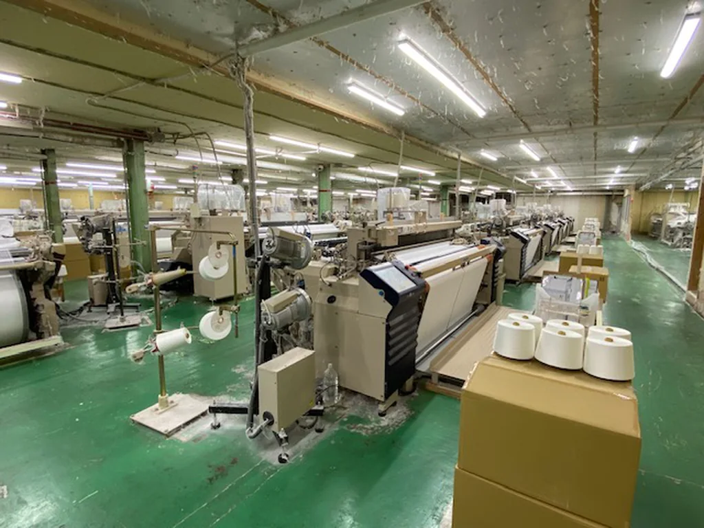
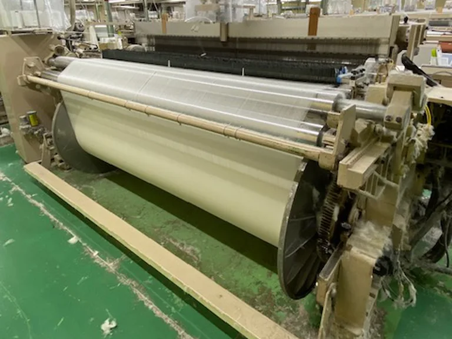
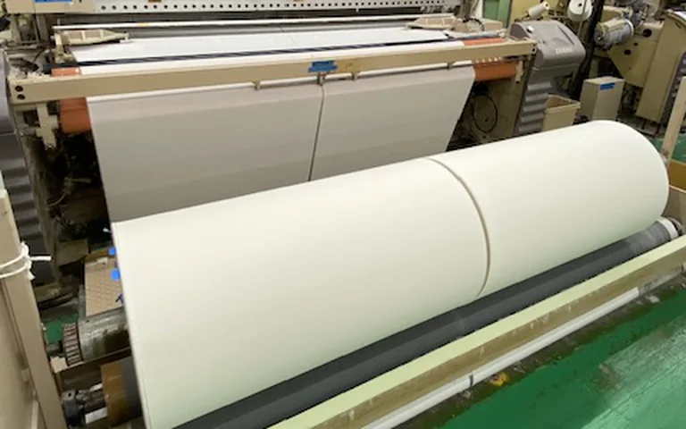
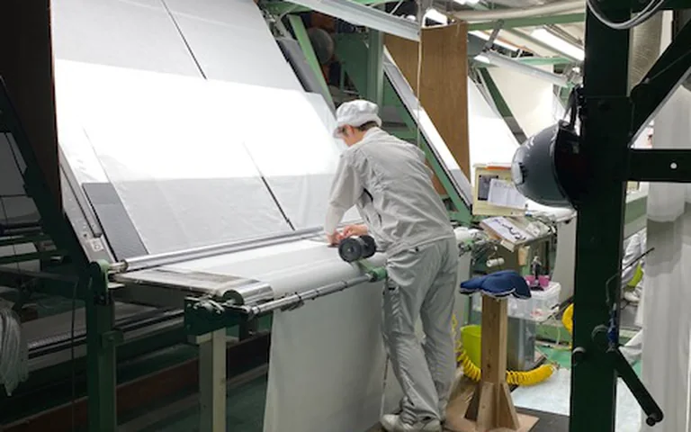
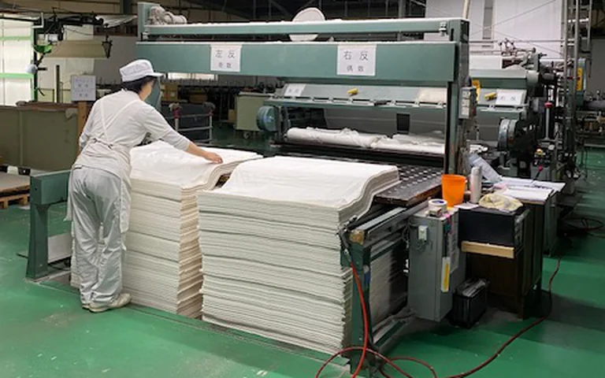

WEAVING DIVISION
Woven for places you never see.
We began producing industrial woven fabrics in 1986. On air-jet looms, we weave fabric that becomes medical cotton cloth and materials for tires.
Weaving DivisionManufacturing industrial woven fabrics

ABOUT
Industrial Woven Fabrics

The Weaving Division manufactures industrial woven fabrics on air-jet looms. Production began in May 1986, expanding FOREST's business into manufacturing.
The finished fabric is delivered as medical cotton cloth and tire materials, and is used in places people rarely see, such as medicated patches and the structural layers of tires.
- Medical cotton cloth (for medicated patches, etc.)
- Tire materials (structural layers of tires)
- Weaving on air-jet looms
- Quality checks through fabric inspection
PROCESS
How Our Fabric Is Made
After weaving, inspection, and finishing, the fabric is delivered to our customers.
-

STEP 01
Weaving
Yarn is woven into fabric on air-jet looms.
ProcessYarnFabric
-

STEP 02
Inspection
The woven fabric is spread out and checked for any quality issues.
CheckWoven fabric
-

STEP 03
Finishing
In this step, the inspected fabric is prepared so that it is ready for delivery.
CompleteFabricDelivery
After delivery, the fabric becomes products such as medicated patches and the structural layers of tires.
CONTACT
Questions about weaving?
Please feel free to contact us about the manufacture of industrial woven fabrics.